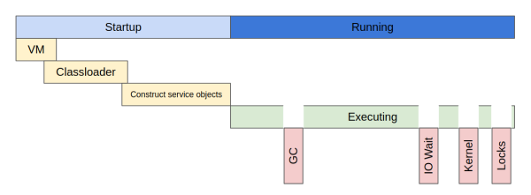

Performance measurement

Performance model. We can discuss about performance in terms of "Startup time" + "Running time". In
first step application prepares to start: start Java VM, load classes, construct service objects (like
beans), in second one - executing. You no need to optimize first step for long running applications. In
runtime you have to minimize time for gc / io wait / kernel wait / thread locks.
Remember about WarmUp. JVM use JIT for compile hot methods to native code (and sometimes cleanup
this). So you have to load application and wait before measure performance.
Benchmarks (micro / macro / meso).
- Micro benchmark - we try to optimize small piece of code. For this needs we recommend to use
JMH.
- Macro benchmark - we try to optimize user scenario. For this needs we recommend to use JMeter.
- Meso benchmark - we try to optimize multiple large scenarios. For this needs we recommend to
use
distributed tracing utils like Zipkin.
Profiling.
- Sampling profiler. Watch memory every N seconds and detect what is going on in this time.
- Instrumented profiler. Inject instructions into byte code and detect all actions. This one
can decrease performance to x5 times or more.
Latency. We can use data locality principle: share less data between layers. All the time when we
fetch data from db we waste our time to external logic (parse / fetch / resolve concurrency problems) and
network. Or in the global level we can use Data center located with your user (for US users in US, for EU in
EU, for Asia in Asia, etc), not only CDN can use this policy, you place your servers in target region.
Performance measurement pitfalls. When we try to increase performance 5 times it is easy for detect
improvements. But when we got 5-10% improvements (or less) we found benchmark sensitivity. In perfect world
we limited only by clock accuracy. But in real world we got multiple side effects like GC or OS background
jobs. So we have to use A/B tests methodology: compare multiple runs with changes and without.
A_GROUP: [T1,..., Tn]
B_GROUP: [t1, ..., tn]
We can use AB Test calculator [
?] for this needs: set visitors as samples count and conversions as evaluation time.
Performance Tip CPU Utilization.
- Low utilization
- Look to disk / network (may have high utilization)
- Look to locks
- Look to OS resources
- High utilization (some cores)
- Look to locks
- Look to kernel calls
- High utilization (all cores)
- Look to architecture
- Look to API usage
- Look to frequently usage methods
- Look to GC configuration